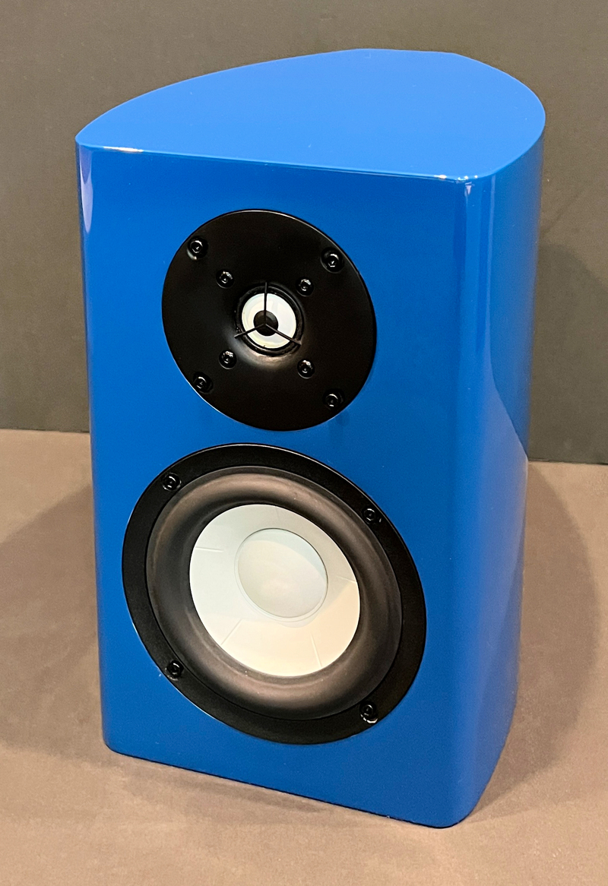

The Ceramic Mini Monitor

The Philharmonic Family now includes a 2-way monitor that can function admirably as a modestly-sized stand mount or as a wide-range desk top or surround speaker. Like all of our offerings, the new "Ceramic Mini" is designed for broad and even radiation with a highly linear on-axis response.The woofer is the 5-inch version of the 6 inch SB Acoustics ceramic woofer in our BMR monitor and shares the same smooth, extended frequency response and surprising bass reach for its size. The rear port can be sealed if space constraints require mounting flush with a wall. The one-inch SB Acoustics ceramic tweeter is one of the smoothest available and can be crossed low enough to match the radiation pattern of the ceramic woofer, without resorting to a waveguide.
The attractively curved cabinets are available in piano black, white, or blue and feature magnetic grills. The Ceramic Mini's are priced at only $850/pair plus shipping. To order, just email Dennis atinfo@philharmonicaudio.com.
Measurements
(On Axis and Off Axis Horizontally, One Meter Anechoic)
On Axis

20 Degrees Off Axis

45 Degrees Off Axis

80 Degrees Off Axis

Specifications
| Cabinet | High Gloss Black, White, or Blue |
| Tweeter | SB Acoustics 1" Ceramic Dome |
| Woofer | SB Acoustics 5" Ceramic Cone |
| Frequency Response | Ported: 55 Hz - 20 kHz (+1.5 dB / - 3db) Anechoic Sealed: 70 Hz - 20 kHz (+1.5 dB/ - 3 dB) Anechoic |
| Sensitivity | 84 dB (2.83v/1M) |
| Box Alignment | Ported or Sealed |
| Dimensions | 12" H x 8.5" W x 11.25" D |
| Weight | 17 lbs |
| Nominal Impedance | 4 Ohms (3.2 Ohms minimum, 15 Ohms maximum) |
| Crossover | Linkwitz-Riley 4th Order Acoustic at 2 kHz |